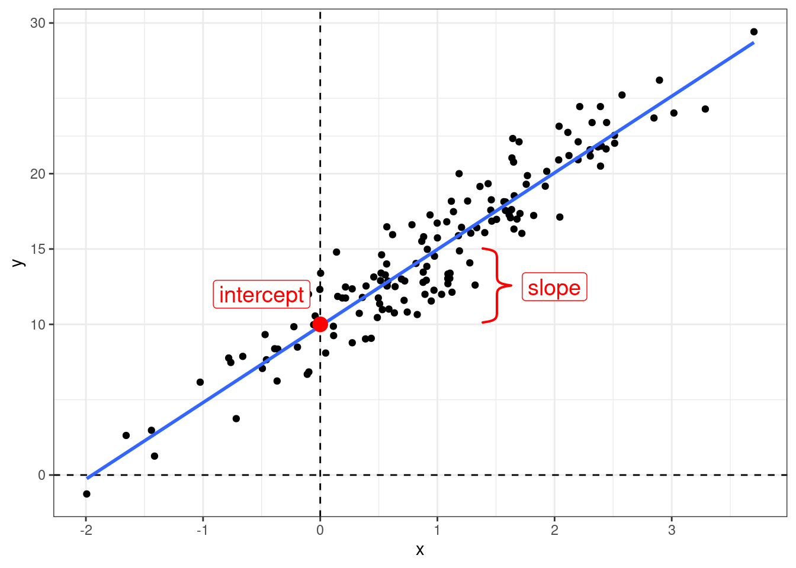
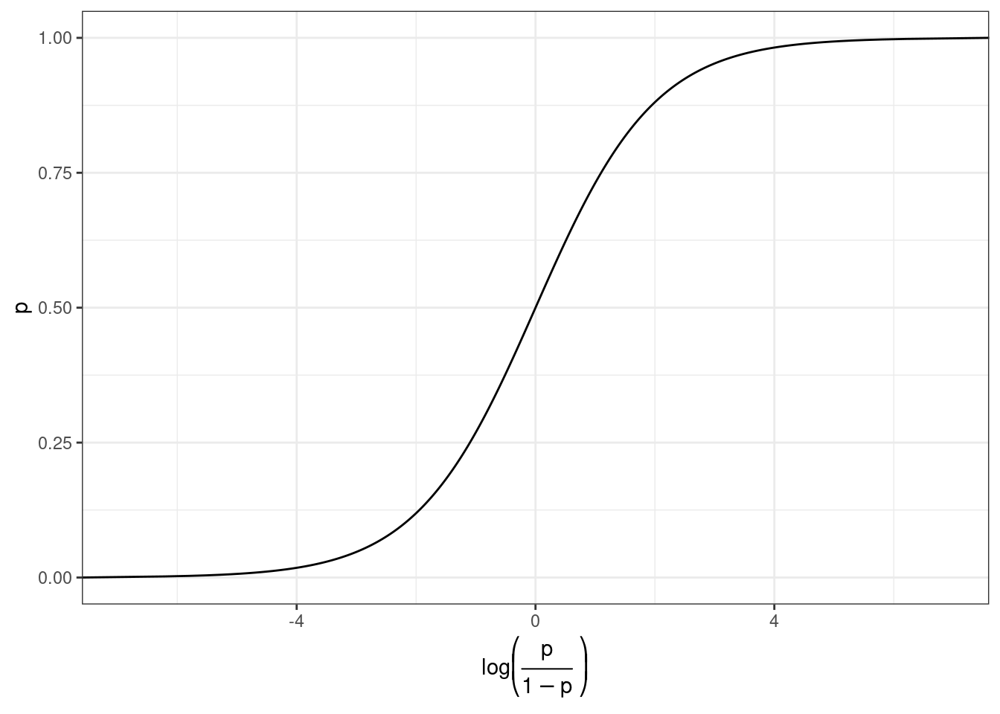
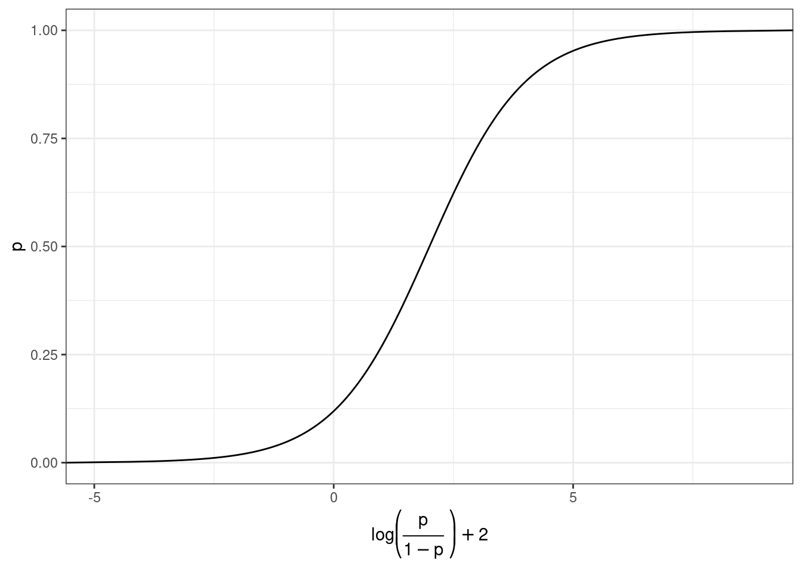
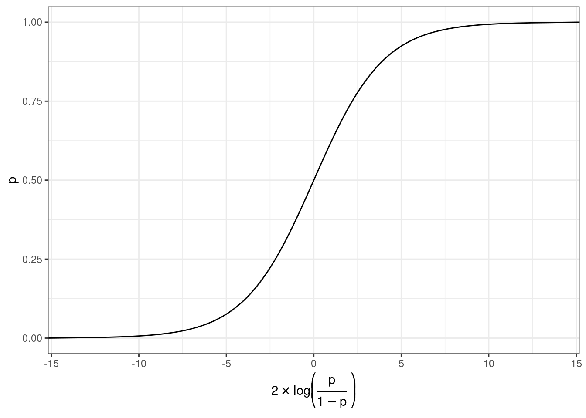
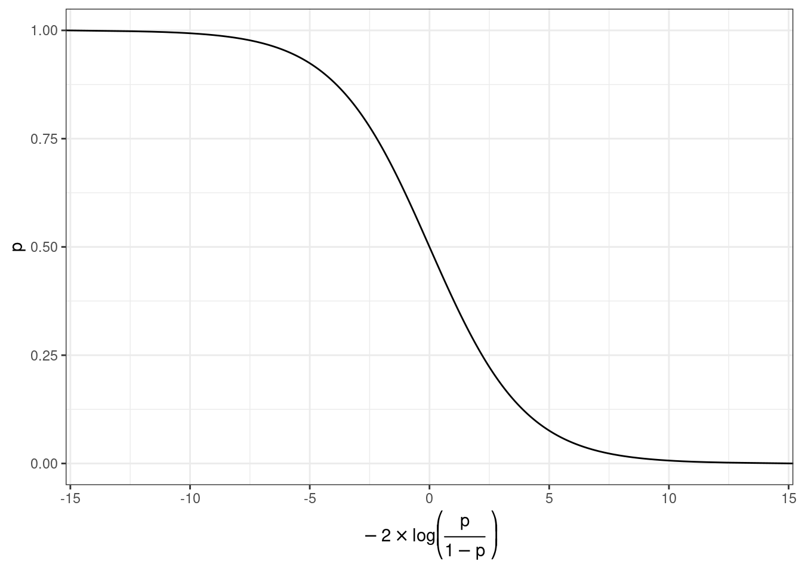
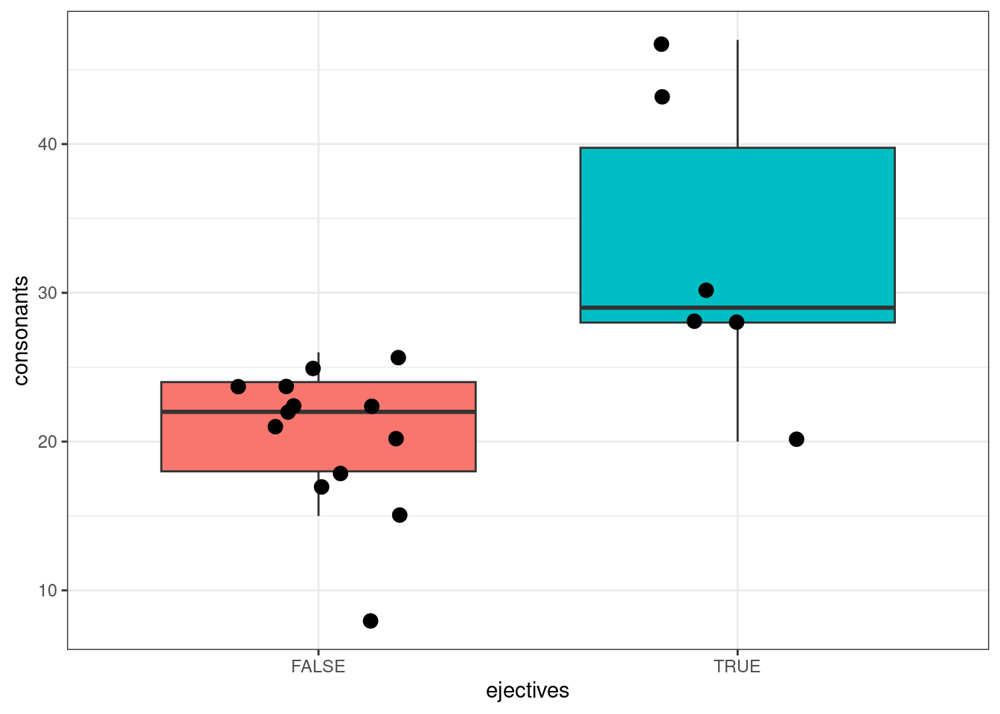
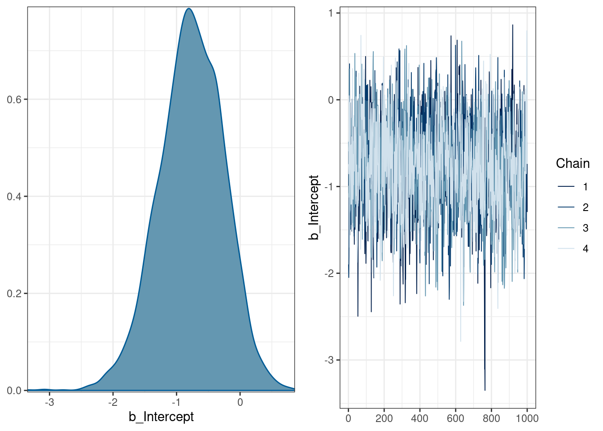
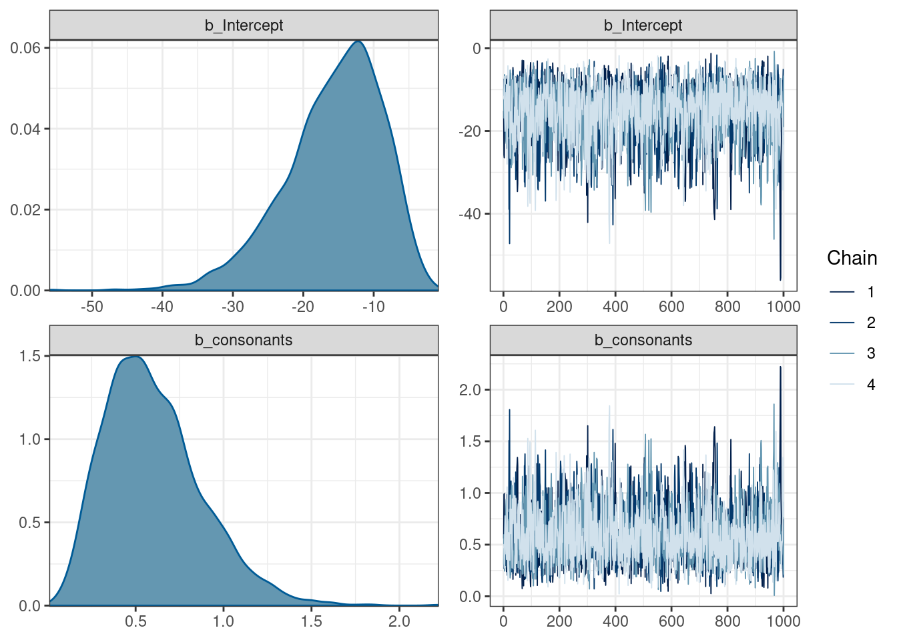
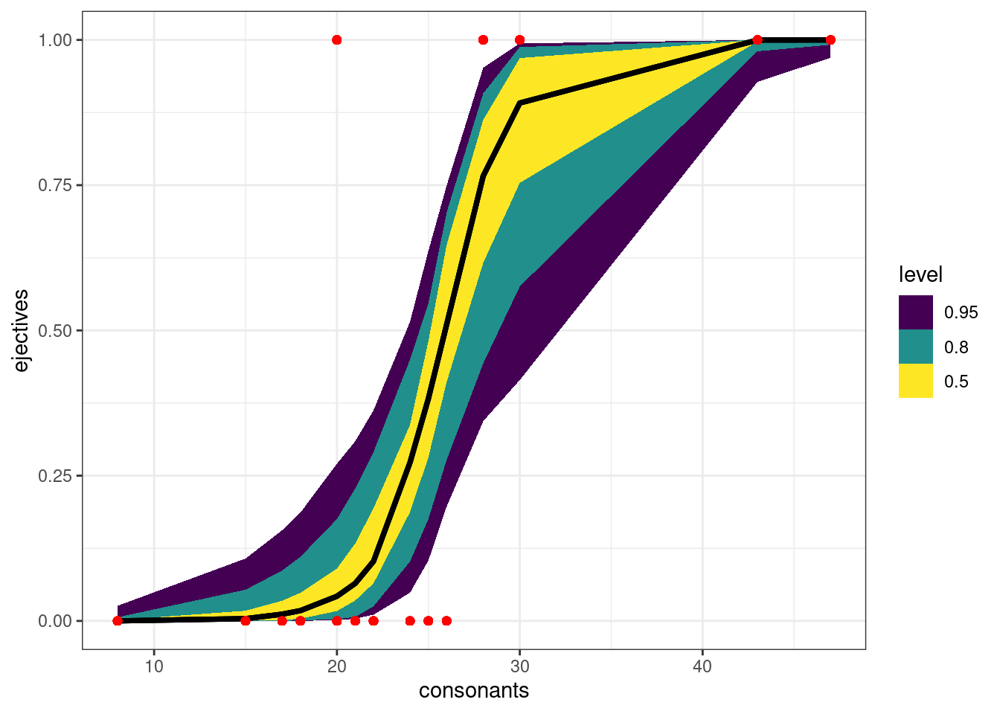
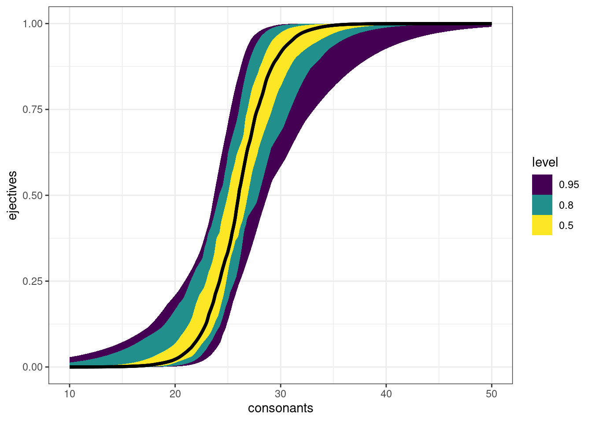

12 Введение в логистическую регресиию
library(tidyverse)12.1 Основы регрессионного анализа

Когда мы используем регрессионный анализ, мы пытаемся оценить два параметра:
- свободный член (intercept) – значение \(y\) при \(x = 0\);
- угловой коэффициент (slope) – изменение \(y\) при изменении \(x\) на одну единицу.
\[y_i = \hat{\beta_0} + \hat{\beta_1}\times x_i + \epsilon_i\]
Причем, иногда мы можем один или другой параметр считать равным нулю.
При этом, вне зависимости от статистической школы, у регрессии есть свои ограничения на применение:
- линейность связи между \(x\) и \(y\);
- нормальность распределение остатков \(\epsilon_i\);
- гомоскидастичность — равномерность распределения остатков на всем протяжении \(x\);
- независимость переменных;
- независимость наблюдений друг от друга.
12.2 Логистическая регрессия
Логистическая (logit, logistic) и мультиномиальная (multinomial) регрессия применяются в случаях, когда зависимая переменная является категориальной:
- с двумя значениями (логистическая регрессия)
- с более чем двумя значениями, упорядоченными в иерархию (порядковая регрессия)
- с более чем двумя значениями (мультиномиальная регрессия)
12.2.1 Теория
Мы хотим чего-то такого: \[\underbrace{y}_{[-\infty, +\infty]}=\underbrace{\mbox{β}_0+\mbox{β}_1\cdot x_1+\mbox{β}_2\cdot x_2 + \dots +\mbox{β}_k\cdot x_k +\mbox{ε}_i}_{[-\infty, +\infty]}\] Вероятность — отношение количества успехов к общему числу событий: \[p = \frac{\mbox{# успехов}}{\mbox{# неудач} + \mbox{# успехов}}, p \in [0, 1]\] Шансы — отношение количества успехов к количеству неудач: \[odds = \frac{p}{1-p} = \frac{p\mbox{(успеха)}}{p\mbox{(неудачи)}}, odds \in [0, +\infty]\] Натуральный логарифм шансов: \[\log(odds) \in [-\infty, +\infty]\]
Но, что нам говорит логарифм шансов? Как нам его интерпретировать?
tibble(n = 10,
success = 1:9,
failure = n - success,
prob.1 = success/(success+failure),
odds = success/failure,
log_odds = log(odds),
prob.2 = exp(log_odds)/(1+exp(log_odds)))Как связаны вероятность и логарифм шансов: \[\log(odds) = \log\left(\frac{p}{1-p}\right)\] \[p = \frac{\exp(\log(odds))}{1+\exp(\log(odds))}\]
Логарифм шансов равен 0.25. Посчитайте вероятность успеха:
Как связаны вероятность и логарифм шансов:

12.2.2 brms
В датасет собрано 19 языков, со следующими переменными:
language— переменная, содержащая языкtone— бинарная переменная, обозначающая наличие тоновlong_vowels— бинарная переменная, обозначающая наличие долгих гласныхstress— бинарная переменная, обозначающая наличие ударенияejectives— бинарная переменная, обозначающая наличие абруптивныхconsonants— переменная, содержащая информацию о количестве согласныхvowels— переменная, содержащая информацию о количестве гласных
phonological_profiles <- read_csv("https://raw.githubusercontent.com/agricolamz/2023_da4l/master/data/phonological_profiles.csv")
glimpse(phonological_profiles)Rows: 19
Columns: 8
$ language <chr> "Turkish", "Korean", "Tiwi", "Liberia Kpelle", "Tulu", "Ma…
$ tone <lgl> FALSE, FALSE, FALSE, TRUE, FALSE, FALSE, TRUE, FALSE, TRUE…
$ long_vowels <lgl> TRUE, FALSE, FALSE, FALSE, TRUE, FALSE, TRUE, FALSE, TRUE,…
$ stress <lgl> TRUE, TRUE, TRUE, FALSE, FALSE, TRUE, FALSE, TRUE, TRUE, F…
$ ejectives <lgl> FALSE, FALSE, FALSE, FALSE, FALSE, FALSE, FALSE, FALSE, FA…
$ consonants <dbl> 25, 21, 22, 22, 24, 20, 22, 24, 15, 18, 17, 8, 26, 28, 30,…
$ vowels <dbl> 8, 11, 4, 12, 13, 6, 20, 12, 5, 11, 8, 5, 14, 6, 7, 7, 5, …
$ area <chr> "Eurasia", "Eurasia", "Australia", "Africa", "Eurasia", "S…set.seed(42)
phonological_profiles %>%
ggplot(aes(ejectives, consonants))+
geom_boxplot(aes(fill = ejectives), show.legend = FALSE, outlier.alpha = 0)+
# по умолчанию боксплот рисует выбросы, outlier.alpha = 0 -- это отключает
geom_jitter(size = 3, width = 0.2)
12.2.2.1 Модель без предиктора
library(brms)
parallel::detectCores()[1] 16n_cores <- 15 # parallel::detectCores() - 1
get_prior(ejectives ~ 1,
data = phonological_profiles)logit_0 <- brm(ejectives~1,
family = bernoulli(),
data = phonological_profiles,
cores = n_cores,
refresh = 0,
silent = TRUE)Running /usr/lib/R/bin/R CMD SHLIB foo.c
gcc -I"/usr/share/R/include" -DNDEBUG -I"/home/agricolamz/R/x86_64-pc-linux-gnu-library/4.2/Rcpp/include/" -I"/home/agricolamz/R/x86_64-pc-linux-gnu-library/4.2/RcppEigen/include/" -I"/home/agricolamz/R/x86_64-pc-linux-gnu-library/4.2/RcppEigen/include/unsupported" -I"/home/agricolamz/R/x86_64-pc-linux-gnu-library/4.2/BH/include" -I"/home/agricolamz/R/x86_64-pc-linux-gnu-library/4.2/StanHeaders/include/src/" -I"/home/agricolamz/R/x86_64-pc-linux-gnu-library/4.2/StanHeaders/include/" -I"/home/agricolamz/R/x86_64-pc-linux-gnu-library/4.2/RcppParallel/include/" -I"/home/agricolamz/R/x86_64-pc-linux-gnu-library/4.2/rstan/include" -DEIGEN_NO_DEBUG -DBOOST_DISABLE_ASSERTS -DBOOST_PENDING_INTEGER_LOG2_HPP -DSTAN_THREADS -DBOOST_NO_AUTO_PTR -include '/home/agricolamz/R/x86_64-pc-linux-gnu-library/4.2/StanHeaders/include/stan/math/prim/mat/fun/Eigen.hpp' -D_REENTRANT -DRCPP_PARALLEL_USE_TBB=1 -fpic -g -O2 -ffile-prefix-map=/build/r-base-LhKvHL/r-base-4.2.3=. -fstack-protector-strong -Wformat -Werror=format-security -Wdate-time -D_FORTIFY_SOURCE=2 -c foo.c -o foo.o
In file included from /home/agricolamz/R/x86_64-pc-linux-gnu-library/4.2/RcppEigen/include/Eigen/Core:88,
from /home/agricolamz/R/x86_64-pc-linux-gnu-library/4.2/RcppEigen/include/Eigen/Dense:1,
from /home/agricolamz/R/x86_64-pc-linux-gnu-library/4.2/StanHeaders/include/stan/math/prim/mat/fun/Eigen.hpp:13,
from <command-line>:
/home/agricolamz/R/x86_64-pc-linux-gnu-library/4.2/RcppEigen/include/Eigen/src/Core/util/Macros.h:628:1: error: unknown type name ‘namespace’
628 | namespace Eigen {
| ^~~~~~~~~
/home/agricolamz/R/x86_64-pc-linux-gnu-library/4.2/RcppEigen/include/Eigen/src/Core/util/Macros.h:628:17: error: expected ‘=’, ‘,’, ‘;’, ‘asm’ or ‘__attribute__’ before ‘{’ token
628 | namespace Eigen {
| ^
In file included from /home/agricolamz/R/x86_64-pc-linux-gnu-library/4.2/RcppEigen/include/Eigen/Dense:1,
from /home/agricolamz/R/x86_64-pc-linux-gnu-library/4.2/StanHeaders/include/stan/math/prim/mat/fun/Eigen.hpp:13,
from <command-line>:
/home/agricolamz/R/x86_64-pc-linux-gnu-library/4.2/RcppEigen/include/Eigen/Core:96:10: fatal error: complex: No such file or directory
96 | #include <complex>
| ^~~~~~~~~
compilation terminated.
make: *** [/usr/lib/R/etc/Makeconf:169: foo.o] Error 1logit_0 Family: bernoulli
Links: mu = logit
Formula: ejectives ~ 1
Data: phonological_profiles (Number of observations: 19)
Draws: 4 chains, each with iter = 2000; warmup = 1000; thin = 1;
total post-warmup draws = 4000
Population-Level Effects:
Estimate Est.Error l-95% CI u-95% CI Rhat Bulk_ESS Tail_ESS
Intercept -0.77 0.51 -1.80 0.17 1.01 1076 1990
Draws were sampled using sampling(NUTS). For each parameter, Bulk_ESS
and Tail_ESS are effective sample size measures, and Rhat is the potential
scale reduction factor on split chains (at convergence, Rhat = 1).plot(logit_0)
В нашем датасете 13 языков не имеют абруптивных и 6 имеют, так что число, которое мы видим в коэффициенте можно оценить как \(log(6/13)=-0.7732\), что немного отличается от того, что получилось в модели. Мы можем использовать прошлую формулу, чтобы получить вероятность:
coef <- -0.79
exp(coef)/(1+exp(coef))[1] 0.312168712.2.2.2 Модель c одним числовым предиктором
logit_1 <- brm(ejectives~consonants,
family = bernoulli(),
data = phonological_profiles,
cores = n_cores,
refresh = 0,
silent = TRUE)Running /usr/lib/R/bin/R CMD SHLIB foo.c
gcc -I"/usr/share/R/include" -DNDEBUG -I"/home/agricolamz/R/x86_64-pc-linux-gnu-library/4.2/Rcpp/include/" -I"/home/agricolamz/R/x86_64-pc-linux-gnu-library/4.2/RcppEigen/include/" -I"/home/agricolamz/R/x86_64-pc-linux-gnu-library/4.2/RcppEigen/include/unsupported" -I"/home/agricolamz/R/x86_64-pc-linux-gnu-library/4.2/BH/include" -I"/home/agricolamz/R/x86_64-pc-linux-gnu-library/4.2/StanHeaders/include/src/" -I"/home/agricolamz/R/x86_64-pc-linux-gnu-library/4.2/StanHeaders/include/" -I"/home/agricolamz/R/x86_64-pc-linux-gnu-library/4.2/RcppParallel/include/" -I"/home/agricolamz/R/x86_64-pc-linux-gnu-library/4.2/rstan/include" -DEIGEN_NO_DEBUG -DBOOST_DISABLE_ASSERTS -DBOOST_PENDING_INTEGER_LOG2_HPP -DSTAN_THREADS -DBOOST_NO_AUTO_PTR -include '/home/agricolamz/R/x86_64-pc-linux-gnu-library/4.2/StanHeaders/include/stan/math/prim/mat/fun/Eigen.hpp' -D_REENTRANT -DRCPP_PARALLEL_USE_TBB=1 -fpic -g -O2 -ffile-prefix-map=/build/r-base-LhKvHL/r-base-4.2.3=. -fstack-protector-strong -Wformat -Werror=format-security -Wdate-time -D_FORTIFY_SOURCE=2 -c foo.c -o foo.o
In file included from /home/agricolamz/R/x86_64-pc-linux-gnu-library/4.2/RcppEigen/include/Eigen/Core:88,
from /home/agricolamz/R/x86_64-pc-linux-gnu-library/4.2/RcppEigen/include/Eigen/Dense:1,
from /home/agricolamz/R/x86_64-pc-linux-gnu-library/4.2/StanHeaders/include/stan/math/prim/mat/fun/Eigen.hpp:13,
from <command-line>:
/home/agricolamz/R/x86_64-pc-linux-gnu-library/4.2/RcppEigen/include/Eigen/src/Core/util/Macros.h:628:1: error: unknown type name ‘namespace’
628 | namespace Eigen {
| ^~~~~~~~~
/home/agricolamz/R/x86_64-pc-linux-gnu-library/4.2/RcppEigen/include/Eigen/src/Core/util/Macros.h:628:17: error: expected ‘=’, ‘,’, ‘;’, ‘asm’ or ‘__attribute__’ before ‘{’ token
628 | namespace Eigen {
| ^
In file included from /home/agricolamz/R/x86_64-pc-linux-gnu-library/4.2/RcppEigen/include/Eigen/Dense:1,
from /home/agricolamz/R/x86_64-pc-linux-gnu-library/4.2/StanHeaders/include/stan/math/prim/mat/fun/Eigen.hpp:13,
from <command-line>:
/home/agricolamz/R/x86_64-pc-linux-gnu-library/4.2/RcppEigen/include/Eigen/Core:96:10: fatal error: complex: No such file or directory
96 | #include <complex>
| ^~~~~~~~~
compilation terminated.
make: *** [/usr/lib/R/etc/Makeconf:169: foo.o] Error 1logit_1 Family: bernoulli
Links: mu = logit
Formula: ejectives ~ consonants
Data: phonological_profiles (Number of observations: 19)
Draws: 4 chains, each with iter = 2000; warmup = 1000; thin = 1;
total post-warmup draws = 4000
Population-Level Effects:
Estimate Est.Error l-95% CI u-95% CI Rhat Bulk_ESS Tail_ESS
Intercept -15.67 6.96 -31.56 -5.01 1.00 1971 1770
consonants 0.60 0.28 0.18 1.24 1.00 2060 1736
Draws were sampled using sampling(NUTS). For each parameter, Bulk_ESS
and Tail_ESS are effective sample size measures, and Rhat is the potential
scale reduction factor on split chains (at convergence, Rhat = 1).plot(logit_1)
library(tidybayes)
phonological_profiles %>%
add_epred_draws(logit_1, ndraws = 50) %>%
mutate(ejectives = as.double(ejectives)) %>%
ggplot(aes(consonants, ejectives)) +
stat_lineribbon(aes(y = .epred))+
geom_point(color = "red")
Картинка кривая, потому что она строится на основе наших немногочисленных данных. Если мы создадим датафрейм с согласными, то график будет более плавный:
tibble(consonants = seq(10, 50, by = 0.1)) %>%
add_epred_draws(logit_1, ndraws = 50) %>%
ggplot(aes(consonants, ejectives)) +
stat_lineribbon(aes(y = .epred))
Какова вероятность, что в языке с 29 согласными есть абруптивные?
\[\log\left({\frac{p}{1-p}}\right)_i=\beta_0+\beta_1\times consinants_i + \epsilon_i\]
\[\log\left({\frac{p}{1-p}}\right)=-15.74 + 0.60 \times 29 = 1.66\]
\[p = \frac{e^{1.66}}{1+e^{1.66}} = 0.840238\]
Однако в отличие от фриквентистских моделей, predict() на байесовских моделях делает сэмпл из распределений:
predict(logit_1, newdata = data.frame(consonants = 29)) Estimate Est.Error Q2.5 Q97.5
[1,] 0.76725 0.4226371 0 1predict(logit_1, newdata = data.frame(consonants = 29)) Estimate Est.Error Q2.5 Q97.5
[1,] 0.795 0.4037521 0 1predict(logit_1, newdata = data.frame(consonants = 29)) Estimate Est.Error Q2.5 Q97.5
[1,] 0.7805 0.4139596 0 1predict(logit_1, newdata = data.frame(consonants = 29)) Estimate Est.Error Q2.5 Q97.5
[1,] 0.7915 0.4062869 0 1